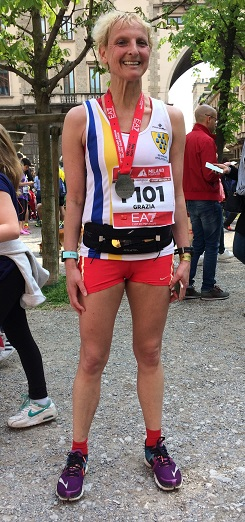
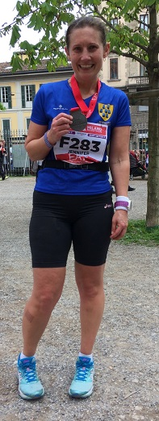
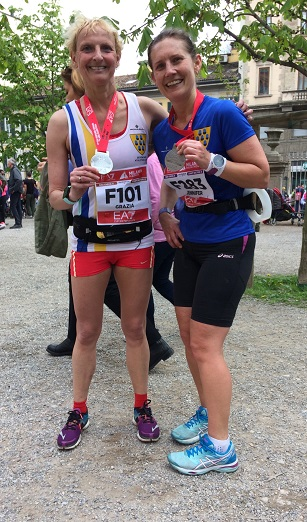
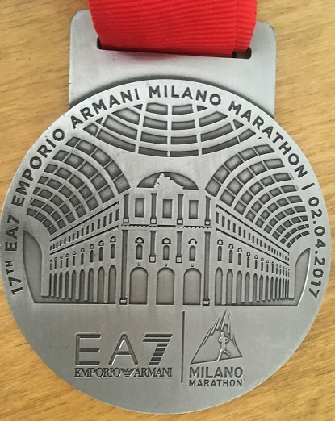
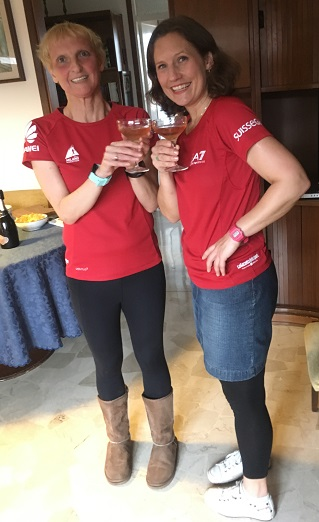

Jenny and myself really enjoyed our trip to Milan and we both got a PB in the marathon, writes Grace Manzotti. On the Saturday we picked up our numbers and t-shirts at the expo. The t-shirt is red and designed by Giorgio Armani. The weather was sunny and warm and we were a bit worried about marathon weather, but we didn't need to be as the weather was not hot and it was cloudy on marathon day.

My main aim was to go under 4 hours so I started following the sub 4 hours pacers. It was Ok at the beginning but I found difficult that they stopped a long time at the water stations and then had to make up for lost time, so they were really accelerating at times and then slowing down again. At miles 17 they did a very fast mile and I started getting tired and I really wanted to slow down and was worried I would lose them. I knew that psychologically losing the pacers so early on was not good. It was a mental battle, but I managed to to keep up with them, recover and carry on. At mile 24 I really wanted to stop, and it was a real mental battle not to. The pacers went a bit ahead and that wasn't good but I realised that I had a lot of time to spare to get under 4 hours so I thought if I keep on running I will get there in under 4 hours anyway. Then I saw the 350 metres sign. I looked at the watch and I realised that if I sprinted I would get a PB, so the brain said to my legs it is like the track at Sevenoaks: less than a lap, only 350 metres to go - sprint! My legs said "You what? You must be joking", but my brain said "I want a PB", so I sprinted as fast as I could for the last 300 and came in in 3h57.48, a PB by about 30 seconds. Phew!

Jenny's PB is much more amazing - over 14 minutes!

She also started with the pacers as her aim was to get a PB which would have been under 4h30, but she knew she could go faster than a sub 4h30 so she started following the 4h15 pacers and keeping them in sight, but she knew it wouldn't matter too much as she would still get a PB. She said she lost them at some point but she wasn't worried as she knew she was going to get a good time anyway and she came in 4h.17.46, which is 14 minutes under her previous time and a massive PB.
We both found it a bit strange that of 6,000 people there were only about 773 women. Most of the runners were men and we also found Italian runners not as friendly as our runners in England. There was a lot of pushing and shoving and we both got pushed a few times, and at the water station everybody was pushing to get to the water and shoving everybody else out of the way!! Apart from that the marathon was well organised and the course is nice. It goes through all the sights in Milan.

On the medal is the Galleria Vittorio Emanuele

one of the world's oldest shopping malls. The Galleria is named after Victor Emmanuel II, the first king of Italy.
In the evening we celebrated with Italian pink champagne and my mum's home made Italian food.
These are the official results.